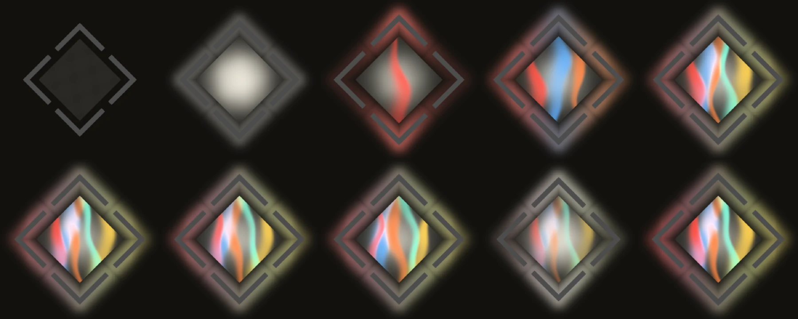

OVERVIEW
PRiSM is a vocal harmoniser driven by MIDI. Your voice comes in on the side chain; the chords you play decide the notes. Each held key becomes a new copy of your voice, tuned exactly to that pitch and placed across the stereo field, so a single take turns into a choir that follows your hands.
The CRYSTAL tone rebuilds each voice from pure harmonics shaped by your vowels, for a clean, glassy sound. GRAIN keeps more of the original recording's texture.

QUICK START
- 01In Logic, create a Software Instrument track and load PRiSM in the INSTRUMENT slot (AU MIDI-controlled Effects).
- 02In the plug-in window's header bar, choose your vocal track from Logic's Side Chain menu.
- 03Play the vocal and hold chords on the instrument track.
- 04Use LEAD to keep your own voice (DRY or TUNED) on top of the chord, or OFF for chord voices only.
HOW IT WORKS
Voice from the side chain
PRiSM listens to the side-chain input, not the track it sits on. The track itself only supplies the MIDI.
Pure tuning
TUNING JUST tunes the chord voices to pure intervals against each other, so they ring together without beating.
No dropouts
The CRYSTAL voices follow the loudness of your voice rather than a pitch tracker, so breathy or quiet singing does not drop out.
CONTROLS
Values in the dark wells are the defaults.
TOP ROW
KNOBS
TIPS
- Sing simple, sustained vowels: the clearer the vowel, the more crystalline the result.
- Close voicings with a JUST tuning sound the most like a glass choir.
- For a dry stem of just the harmonies, set LEAD to OFF.
SPECS
- TYPE
- AU MIDI-controlled effect (aumf), VST3, Standalone
- INPUT
- Side-chain audio + MIDI
- OUTPUT
- Stereo